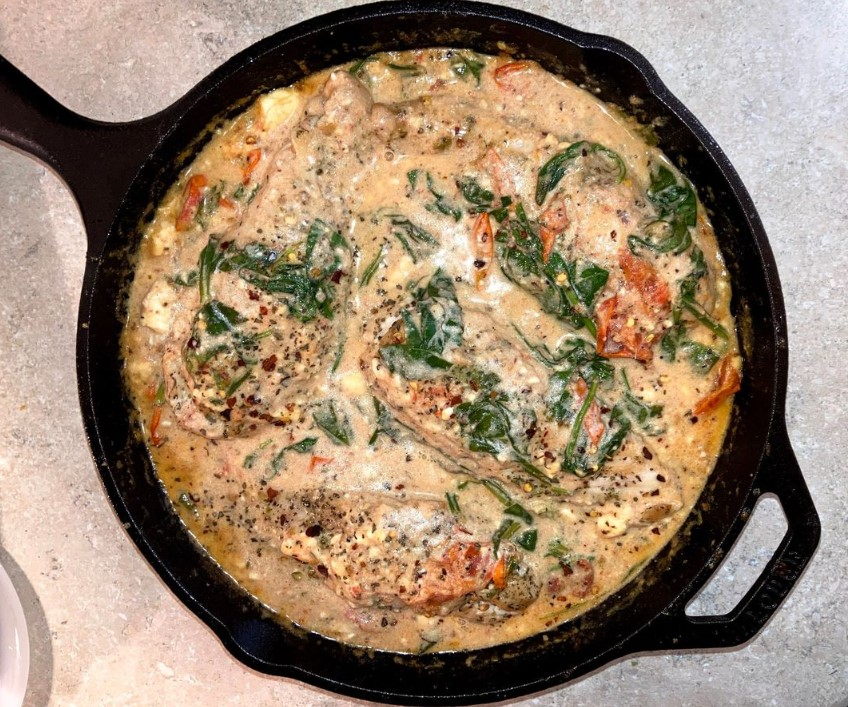

Delicious Lasagna Recipe
Prep Time: 20 mins
Cook Time: 1 hr
Servings: 6
Difficulty: Intermediate
This lasagna is a classic Italian dish made with layers of pasta, meat sauce, and creamy cheese.
Ingredients
- 1 lb ground beef
- 1 onion, chopped
- 3 cups marinara sauce
- 1 package lasagna noodles
- 2 cups ricotta cheese
- 2 cups shredded mozzarella cheese
- 1/2 cup grated Parmesan cheese
Instructions
- Preheat oven to 375°F (190°C).
- In a large skillet, cook ground beef and onion until browned. Drain excess fat.
- Add marinara sauce to the beef mixture and simmer for 10 minutes.
- Spread a thin layer of meat sauce in a baking dish. Place a layer of noodles on top.
- Spread half of the ricotta cheese over the noodles, then top with a third of the mozzarella cheese and a third of the Parmesan.
- Repeat layers until all ingredients are used, ending with a layer of mozzarella on top.
- Cover with foil and bake for 45 minutes, then remove foil and bake for another 15 minutes until cheese is melted and bubbly.
Tips & Variations
Try adding spinach or mushrooms to the meat sauce for extra flavor. Substitute ground beef with ground turkey for a lighter version.
Nutrition Information (per serving)
Calories: 450 | Fat: 20g | Carbs: 40g | Protein: 25g
User Reviews
Jane Doe: "This lasagna was amazing! My family loved it."
John Smith: "Easy to follow recipe and turned out great."